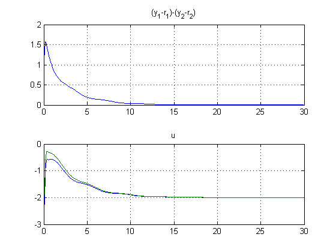
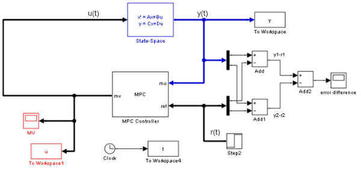
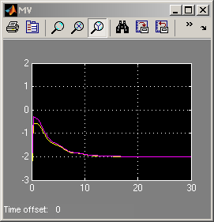
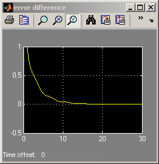

MPC with Non-Diagonal Weight Matrices
Contents
This demonstration shows how to use non-diagonal weight matrices.
MPC Controller Setup
We start defining the plant to be controlled.
sys=ss(tf({1,1;1,2},{[1 .5 1],[.7 .5 1];[1 .4 2],[1 2]}),'min');
Now, setup an MPC controller object.
Ts=.1; % sampling time model=c2d(sys,Ts); % prediction model
Define prediction and control horizons.
p=20; % prediction horizon m=2; % control horizon
Let us assume default value for weights and build the MPC object.
MPCobj=mpc(model,Ts,p,m);
-->The "Weights.ManipulatedVariables" property of "mpc" object is empty. Assuming default 0.00000. -->The "Weights.ManipulatedVariablesRate" property of "mpc" object is empty. Assuming default 0.10000. -->The "Weights.OutputVariables" property of "mpc" object is empty. Assuming default 1.00000.
Define constraints on the manipulated variable.
clear MV MV(1)=struct('Min',-3,'Max',3,'RateMin',-100,'RateMax',100); MV(2)=struct('Min',-2,'Max',2,'RateMin',-100,'RateMax',100); MPCobj.MV=MV;
Define non-diagonal output weight. Note that it is specified inside a cell!
OW=[1 -1]'*[1 -1]; % Non-diagonal output weight, corresponding to ((y1-r1)-(y2-r2))^2 MPCobj.Weights.OutputVariables={OW}; % Non-diagonal input weight, corresponding to (u1-u2)^2 MPCobj.Weights.ManipulatedVariables={0.5*OW};
Closed-Loop MPC Simulation Using the Command SIM
Tstop=30; % simulation time Tf=round(Tstop/Ts); % number of simulation steps r=ones(Tf,1)*[1 2]; % reference trajectory
Run the closed-loop simulation and plot results.
close all [y,t,u]=sim(MPCobj,Tf,r); subplot(211) plot(t,y(:,1)-r(1,1)-y(:,2)+r(1,2));grid title('(y_1-r_1)-(y_2-r_2)'); subplot(212) plot(t,u);grid title('u');
-->Integrated white noise added on measured output channel #1. -->Integrated white noise added on measured output channel #2. -->The "Model.Noise" property of the "mpc" object is empty. Assuming white noise on each measured output channel.
MPC Simulation Using Simulink®
if ~mpcchecktoolboxinstalled('simulink') disp('Simulink(R) is required to run this part of the demo.') return end
The continuous-time plant to be controlled has the following state-space realization:
[A,B,C,D]=ssdata(sys);
Now simulate closed-loop MPC in Simulink®.
open_system('mpc_weightsdemo'); sim('mpc_weightsdemo',Tstop)  
bdclose('mpc_weightsdemo');